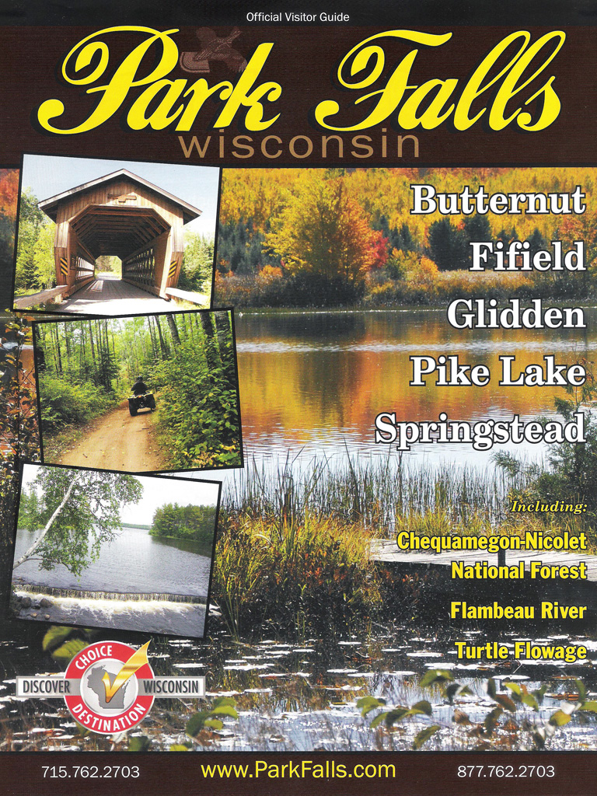
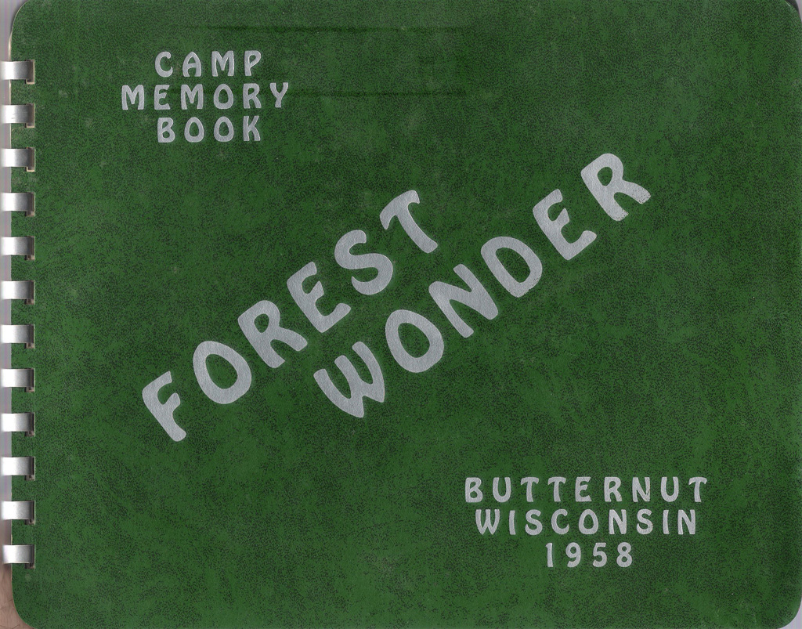

 This is what started it all! |
|||
| While traveling to Chicago in May of 2014, Mei-O and I stopped at a Wisconsin rest area where I picked up the tourist guide book
pictured above. Park Falls, Wisconsin and Butternut were the two towns nearest (at least, that was how I remembered it) what was once Forest
Wonder Camp, a camp which, back in the late 1950s, my father Leonard and a partner, Morey Friedman, purchased in northern
Wisconsin, not far from the border with Michigan's Upper Peninsula. They were to turn the 360+ acres of woods, water, cabins, and a main camp building
into a boys' summer camp. Both my dad and Morey were involved in Boy Scouts, and they figured that many of the boys' parents would be interested in
sending their sons up there for the summer.
Several times over the last many years, as I thought of Forest Wonder Camp, I wondered if I could ever find it again and perhaps go visit it. Once, Mei-O and I, just for fun, traveled up to Park Falls, but I had absolutely no idea where the camp was. Now, finding the email address of the Park Falls Chamber of Commerce in the visitor's guide, I sent them the following email: I don't know if anyone on the Chamber can help me, but maybe someone there And after about a week, I received the following disappointing reply: Dear Rick Yep, it was disappointing. But at least I was able to follow Ms. Holm's directions from Butternut on Google
Maps (where all the map images that are linked to on this page are taken from) to find the camp!note And it was Anyhow, the camp was beautiful, two large lakes separated by a narrow causeway that took you from the outside world
into the camp itself. My brother Joel and I attended the camp in 1958, and, if we attended any other years, I don't remember it. I only know the year because
I have this "Camp Memory Book" from that year. (These are the only pictures I have of the camp. Cameras weren't as omnipresent in those days as they are now.)
 Click on the cover to see some pictures of the camp. I never knew what happened to my dad's dream for the camp, until, in 2016, while discussing it with my brother via e-mail, he sent me this: As far as why Dad got out, they couldn't get enough campers to make the business profitable. It was a losing proposition from the day they bought it and neither Dad nor Morrie had adequate funds to pay the mortgage or to keep the camp open. From what I remember they did a bankruptcy for the business, probably in late 1958 or early 1959 and both of them walked away from it. The bank holding the mortgage took over the property at that time thru the bankruptcy. Not sure what happened after that. Here's an e-mail I received from one of Morey's sons, Kerry, who was a fellow camper in 1958, and here's one I received in July of 2020 from another former camper who I don't remember and whose name isn't in my camp memory book. These shed a little more light on what happened to the camp. Before I saw how isolated it was, I always thought, oh, if it was still owned by our family, I might be living on it now! But, then again, it does look like
it'd be a pretty tough place to live, especially in the winter. (Even though, I do find myself somewhat envious of the current owner!)
|
|||
Finally, here's an embedded interactive Google Map you can play around with to view the area. Zooming in or out will give you a good idea of how isolated the property is. |
|||
| Update: Sep. 14th, 2016. The house and all the property that was once Forest Wonder Camp is up for sale.
Check this out! Update #2: May 11th, 2018. I received some e-mails about the camp's history, which included a bunch of old pictures. Check this out! Update #3: March 25th, 2019. I received another e-mail from the same person with just this photo attached. (Here's a fixed version.) I don't know who the lucky fisherman is. The building in the background is the main lodge where my parents (and the Friedmans) lived, which included the large dining hall where we campers ate all our meals. |
|||
{kind=link}
{kind=link}
{kind=link}
{kind=link}
{kind=link}
{kind=link}
{kind=link}
{kind=link}
{kind=link}
{kind=link}